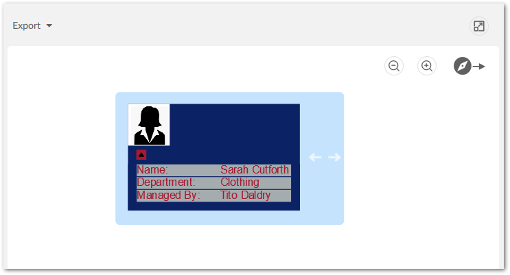

Once you have implemented a node template, an administrator must include the template in a value and relationship graph configuration. The following section provides a node template code sample and instructions for adding it to an existing configuration.
The following is a sample code for a node template:
public class nodeTemplateExample implements NodeTemplateFactory {
private static final int DEFAULT_WIDTH = 275;
public NodeTemplate build() {
NodeTemplate template = new NodeTemplate();
template.setShapeType(ShapeType.ROUNDED_RECTANGLE);
NodePanel rootPanel = new NodePanel();
rootPanel.setWidth(DEFAULT_WIDTH);
NodePanel mainPanel = new NodePanel();
mainPanel.setPanelLayout(PanelLayout.VERTICAL);
mainPanel.setBackgroundColor("#0B2265");
mainPanel.setMargin(MarginType.LEFT, 12);
mainPanel.setMargin(MarginType.TOP, 12);
mainPanel.setMargin(MarginType.BOTTOM, 12);
{
NodePanel imagePanel = new NodePanel();
imagePanel.setAlignment(AlignmentType.MIDDLE_LEFT);
{
NodeImage image = new NodeImage();
image.setBindingSource("/icons/w1.png");
image.setHeight(50);
image.setWidth(50);
imagePanel.addElement(image);
}
NodePanel table = new NodePanel();
{
NodeDataTable dataTable = new NodeDataTable();
dataTable.setAlignment(AlignmentType.CENTER);
dataTable.setNumberOfColumns(2);
dataTable.setColumnsWidth(new int[] { 100, 85 });
dataTable.setRowSeparatorColor("#0B2265");
dataTable.setBorderColor("#0B2265");
dataTable.setBackgroundColor("#A5ACAF");
dataTable.setTextColor("#A71930");
dataTable.addRowData("Name:", "${/name}");
dataTable.addRowData("Department:", "${/departmentID}");
dataTable.addRowData("Managed By:", "${/supervisorID}");
dataTable.setMargin(MarginType.BOTTOM, 10);
dataTable.setMargin(MarginType.LEFT, 10);
dataTable.setMargin(MarginType.RIGHT, 10);
table.addElement(dataTable);
}
NodeExpanderButton expand = new NodeExpanderButton();
expand.setTargetElement(table);
expand.setAlignment(AlignmentType.MIDDLE_LEFT);
expand.setMargin(MarginType.TOP, 5);
expand.setMargin(MarginType.LEFT, 10);
expand.setMargin(MarginType.BOTTOM, 5);
expand.setBackgroundColor("#A71930");
expand.setHeight(12);
expand.setWidth(12);
mainPanel.addElement(imagePanel);
mainPanel.addElement(expand);
mainPanel.addElement(table);
}
NodePanel indicatorPanel = new NodePanel();
{
NodeIndicator indicator = new NodeIndicator();
indicator.setOpacity(1);
indicator.setWidth(40);
indicator.setHeight(40);
indicator.setMargin(MarginType.LEFT, 10);
indicator.setAlignment(AlignmentType.CENTER);
indicatorPanel.addElement(indicator);
}
rootPanel.addElement(mainPanel);
rootPanel.addElement(indicatorPanel);
template.setPanel(rootPanel);
return template;
}
}
The following image shows the result of implementing the above node template:
To include a node template in a graph configuration:
Navigate to Administration > TIBCO EBX® Data Model and Data Visualization Add-on > Value and relationship graphs > Table configuration.
Open the desired table configuration and select the Node Style tab.
In the Node Template field, enter the fully qualified name for the class that implements the template.